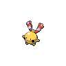

📖 英語版の図鑑説明
This Pokémon gave me an excruciating headache when it seemingly cried out without making a sound. Perhaps there are some sounds that the human ear is simply incapable of hearing.
日本語訳
音もなく鳴いているようで、強烈な頭痛を引き起こすことがあります。人間には聞こえない音を発しているのでしょう。
📝 この図鑑文に出てくる英単語
| 英単語 | 意味 | 品詞 | レベル |
|---|---|---|---|
| excruciating | 耐えがたいほどの | 形容詞 | 大学 |
| headache | 頭痛 | 名詞 | 中3 |
| seemingly | 一見したところ | 副詞 | 大学 |
| cried | 泣いた | 動詞 | 中2 |
| making | 作っている | 動詞 | 中1 |
| simply | ただ単に | 副詞 | 高校 |
| incapable | できない | 形容詞 | 大学 |
| hearing | 聴覚 | 名詞 | 高校 |
文法ポイント without making は前置詞のあとに動詞のing形(動名詞)が続く形で、「〜せずに」という意味です。
when 〜 は「〜するとき」という意味の接続詞。when のまとまりが、もう一方の文がいつ起こるかを表しています。
💡 英語名「Chingling」の由来
英語名「Chingling」は、chime（チャイム）、jingling（チリンチリン）と-ling（「小さい〜」を表す語尾）を組み合わせた名前と考えられている。ドイツ語の名前は「Klingplim」で、Klingel（鐘）、Palimpalim（チリーン）から作られている。
出典 Bulbapedia
📊 リーシャンの種族値
HP45
こうげき30
ぼうぎょ50
とくこう65
とくぼう50
すばやさ45
合計 285
❓ よくある質問
- リーシャンの英語名は？
- リーシャンの英語名は「Chingling」です。
- リーシャンの英語名「Chingling」の由来は？
- 英語名「Chingling」は、chime（チャイム）、jingling（チリンチリン）と-ling（「小さい〜」を表す語尾）を組み合わせた名前と考えられている。ドイツ語の名前は「Klingplim」で、Klingel（鐘）、Palimpalim（チリーン）から作られている。
- リーシャンは英語版の図鑑でどう説明されている？
- 「This Pokémon gave me an excruciating headache when it seemingly cried out without making a sound. Perhaps there are some sounds that the human ear is simply incapable of hearing.」と書かれています。日本語にすると「音もなく鳴いているようで、強烈な頭痛を引き起こすことがあります。人間には聞こえない音を発しているのでしょう。」という意味です。
リーシャンは第4世代（シンオウ地方）のポケモンです。第4世代（シンオウ地方）の英語名一覧 →